我最近买了一个电子厨房秤。它有一个玻璃台和一个易于读数的蓝色背光显示屏。我买它并不是为了烘焙精致的甜点，我也没想把我的公寓变成当地贩毒团伙的藏匿之所。我只是对称重感兴趣。我刚拆开包装，就去了本地的格雷格斯烘焙店买了一根法式长棍面包。面包重391克。第二天，我又去格雷格斯买了一根法式长棍。这根面包略重一点儿，有398克。格雷格斯在英国有1000多家连锁店，它专门售卖茶、香肠卷和涂有糖粉的小面包。但我只盯着法式长棍。第三天，我买回来的法式长棍重399克。现在，我已经厌倦了每天吃一整根长棍面包，但我还继续着日常称重的流程。第4根长棍重403克，也许我应该把它挂在墙上，就像钓到的大鱼。当然，我觉得面包的重量不会一直上升，我是对的。第5根面包是一条小鲦鱼，它只有384克。
在16和17世纪，西欧人对收集数据格外感兴趣。不少测量工具都是在这一时期发明的，比如温度计、气压计和测距仪（一种沿道路滚动测量距离的轮子），使用它们是一件令人兴奋的新鲜事。阿拉伯数字为测量结果提供了有效的符号，而阿拉伯数字最终在受过教育的阶层中被普遍使用，对测量的狂热也起到了推动的作用。收集数字是现代性的高峰，它并非一时的流行。对测量数字的狂热标志着现代科学的开端。我们有了定量描述世界的能力，这完全改变了我们与周围环境的关系。数字为科学探究提供了一种语言，给了我们一种新的信心，让我们可以更深入地了解事物的真实情况。
我发现每天早上买面包和称面包的过程非常令人愉快。我迫不及待地从格雷格斯回来，急切地想知道我的法式长棍有多重。这种期待的激动感觉和你查看足球比分或者金融市场时一样，当你发现你支持的球队或者你的股票表现出色时，那是绝对非常令人兴奋的事。我对法式长棍同样如此。
我之所以每天去烘焙店，是想绘制一张图来表示法式长棍的重量是如何分布的。在吃了10根法式长棍后，我发现最低的重量是380克，而最高的是410克，其中403克的重量重复出现了。重量的范围相当大。虽然这些法式长棍都来自同一家店，价格也相同，但最重的比最轻的重了8%。
我继续做这一实验，在厨房里堆了一堆没吃的面包。大约一个月后，我和这家店的经理艾哈迈德成了朋友，他来自索马里。他感谢我每天购买法式长棍，作为礼物，他送了我一块巧克力面包。
研究这些重量在图表上如何分布简直太有趣了。虽然我无法预测任何一根长棍面包有多重，但把这些重量放在一起，一定会出现某种模式。在吃了100个长棍面包后，我停止了实验。截至当时，379克到422克之间的所有数字都至少出现了一次，只有4个数字例外：
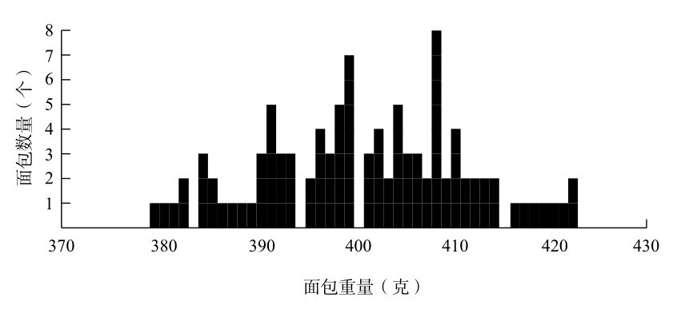
图10-1 法式长棍重量的分布
我开启“面包计划”是出于数学上的原因，但我注意到它在心理学方面也产生了有趣的副作用。在称量每一根面包之前，我会先琢磨它的颜色、长度、围长和质地，它们每天相差很大。我开始觉得自己是一位法式长棍鉴赏家，并且会像面包师冠军那样对自己说：“今天这个面包很重”或者“今天这绝对是一个普通的面包”。我猜对的频率只有一半。但我糟糕的预测记录并没有让我的信念减弱，我还是坚信自己是一名法式长棍评估专家。我推断，这和体育界或金融界的权威人士展现出的那种自欺欺人是一样的，他们同样无法预测随机事件，但他们的职业生涯却依赖于此。
我对格雷格斯的法式长棍最激烈的情绪反应大概出现在重量非常重或者非常轻的时候。当偶尔出现最高或最低重量时，我都会激动不已。当面包的重量很特别时，这一天也显得格外特别，似乎面包的特殊性会转移到我生活的其他方面。理性地说，我知道一定会有一些法式长棍过大，也有些过小。不过，极端重量的出现仍会让我兴奋不已。我的情绪如此容易受到一根面包的影响，这真是令人深思。我认为自己一点儿都不迷信，但我不可避免地也会想从随机模式中找到某种意义。这提醒了我们，我们非常容易受到毫无根据的想法的影响。
尽管数字为启蒙运动中的科学家提供了确定性的保证，但它们通常也并不是那么确定。有时，同一件东西被测量两次会得到两个不一样的结果。对于想为自然现象找到明确而直接解释的科学家来说，这带来了一种尴尬的不便。举个例子，伽利略注意到，用他的望远镜计算恒星距离时，他的结果很容易出现差异。这种差异并不是计算错误造成的，而是因为测量本身不精确。数字并不像人们希望的那般精确。
这正是我测量长棍面包时遇到的情况。造成重量差异的因素可能有很多，比如面粉的用量和黏稠度、面包在烤箱里的时间、面包从格雷格斯的中央面包店到我所在的当地商店的路程、空气湿度，等等。同样，影响伽利略的望远镜测量结果的变量也有很多，包括大气条件、仪器的温度和一些个人化的细节，比如伽利略在记录读数时有多疲惫。
尽管如此，伽利略还是能够看出，他得到的结果差异遵循着一定的规律。尽管存在差异，但每次测量的数据都会聚集在一个中心值附近，距离这个中心值越近的测量结果越常见。他还注意到，数据也呈对称分布，测量值小于中心值与大于中心值的可能性几乎相同。
类似，我的法式长棍数据也表明，面包的重量为约400克的比较多，上下浮动各20克。虽然我的100个法式长棍没有一个正好是400克，但重400克左右的长棍比380克或者420克左右的要多得多，而且这种分布似乎也很对称。
第一个认识到测量误差的这种模式的是德国数学家卡尔·弗里德里希·高斯。这种模式由图10-2中的曲线描述，它被称为钟形曲线。
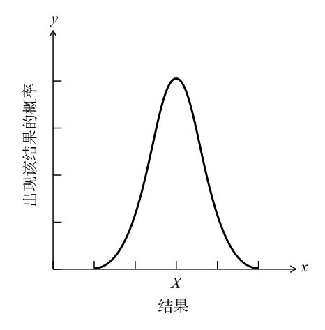
图10-2 钟形曲线
我需要解释一下高斯的曲线是什么意思。横轴描述了一组结果，比如法式长棍的重量或者恒星的距离。纵轴是这些结果出现的概率。用这些参数绘制成的曲线被称为分布曲线。它向我们展示了结果的范围以及每种结果的可能性。
有许多不同类型的分布，但最基本的类型就是由图10-2中的曲线描述的。钟形曲线所表示的分布叫作正态分布，也叫高斯分布。最初，它被称为误差曲线，但由于曲线独特的形状，钟形曲线这个术语变得更加常见。钟形曲线有一个平均值，就是我在图中标记的X，叫作均值。均值是最有可能出现的结果。你离均值越远，结果就越不可能出现。
当你对同一件东西测量两次时，由于测量过程受到随机误差的影响，你很有可能得不到相同的结果。然而，测量的次数越多，结果的分布就越像钟形曲线。结果会围绕一个均值对称地聚集。当然，测量结果的图表不会形成连续的曲线，它是一个由有限数量形成的参差不齐的折线（就像我的法式长棍的测量结果那样）。钟形曲线是一种理论上的理想结果，描述了随机误差产生的模式。我们得到的数据越多，参差不齐的折线就越贴近曲线。
19世纪末，法国数学家亨利·庞加莱就知道受到随机测量误差影响的结果分布近似于钟形曲线。事实上，庞加莱进行了和我的法式长棍一样的实验，但原因不同。他怀疑当地的面包房宰客，卖给了他不足重量的面包，所以他决定用数学赢得正义。在一年时间里，他每天都称量买回来的1千克面包。庞加莱知道，如果只有几次重量低于1千克，那算不上宰客的证据，因为面包的重量在规定的1千克上下浮动是正常的。他猜想，面包重量的曲线会类似于正态分布，因为制作面包时的误差，比如面粉用量和烘焙时间都是随机的。
一年后，他查看了收集到的所有数据。果然，重量的分布近似于钟形曲线。但是，曲线的峰值是950克。也就是说，平均重量是0.95千克，而不是宣传的1千克。庞加莱的怀疑得到了证实。这位著名的科学家被骗了，平均每根面包被偷工减料了50克。根据流传的故事，庞加莱向巴黎当局告发此事，当局给予面包师严厉的警告。
在他争取消费者权益的举动取得小小的胜利后，庞加莱并没有就此停下脚步。他继续每天测量买到的面包，第二年后，他发现图表的形状不完全是一条钟形曲线，而是向右偏斜。因为他知道如果误差是完全随机的，一定会产生钟形曲线，他推断，一些非随机事件影响了他买的那些面包。庞加莱得出结论，面包师并没有停止偷工减料的小气做法，而是把手头上最大的面包给了庞加莱，因此面包重量在分布上出现了偏差。然而对面包师来说不幸的是，他的顾客是法国最聪明的人。庞加莱又一次告发了。
庞加莱惹恼烘焙师的方法十分有先见之明，现在已成为消费者保护理论的基础。当商店按规定重量销售产品时，从法律上来说，产品不必是那个精确的重量，那样也不可能，因为制造的过程不可避免地会使其中一些商品重一点儿，另一些又会轻一点儿。控制贸易标准的官员的工作之一，就是在售卖的商品中随机取样，并绘制商品重量的图表。对于他们测量的任何产品，重量的分布必须落在以宣传的均值为中心的钟形曲线上。
早在庞加莱发现面包的钟形曲线的半个世纪前，另一位数学家在很多地方都发现了钟形曲线。阿道夫·凯特莱（Adolphe Quételet）有充足的理由说自己是世界上最有影响力的比利时人。（事实上，这并不是一个竞争很激烈的领域，但这丝毫不会削弱他的成就。）他原本受到的是几何学和天文学的训练，但他很快就被数据迷住了，更具体地说，是沉迷于在数字中寻找规律，从而改变了自己的职业道路。在他的一个早期项目中，凯特莱研究了法国国家犯罪统计数据，政府从1825年起开始公布这些数据。凯特莱注意到，谋杀案的数量每年都相当稳定。甚至不同类型的凶器的比例都大致相同，无论是用枪、剑、刀、拳头，还是其他工具。放在现在，这些现象并不值得注意，事实上，我们管理公共机构的方式就依赖于对比率的理解，比如犯罪率、考试通过率和事故率，我们认为不同年份的数据之间是有可比性的。然而，凯特莱最早注意到，当把人口当作一个整体来研究时，社会现象总是具有惊人的规律性。在某一年里，我们不可能知道谁会成为杀人犯。然而，在某一年里，我们有可能相当准确地预测出会发生多少起谋杀案。凯特莱对这种模式引发的关于个人责任以及由此引申开的关于惩治伦理的深层次问题感到困扰。如果社会就像一台机器，制造出了一定数量的杀人犯，这难道不是说明，谋杀是社会的过错而非个人的过错吗？
凯特莱的想法改变了“统计学”这个概念，这个词原来的含义与数字没有什么关联，只是被用来描述有关国家的一般情况，比如政治家需要的那类信息。凯特莱把统计学变成了一门更广泛的学科，这门学科不再主要与治国能力相关，而更多地与集体行为有关。如果没有概率论的进步，他也不可能做到这一点，概率论提供了分析数据随机性的技术。1853年，凯特莱在布鲁塞尔举办了第一次统计学国际会议。
凯特莱对集体行为的理解在其他科学领域中也产生了反响。如果通过观察人群的数据，可以发现可靠的模式，那么人们也不难认识到，其他群体，比如原子群体也遵循着可预测的规律。詹姆斯·克拉克·麦克斯韦和路德维希·玻尔兹曼（Ludwig Boltzmann）提出了气体动力学理论，都是得益于凯特莱的统计学思想。气体动力学理论认为，气体的压强取决于其中以不同速度随机运动的分子的碰撞。虽然我们无法得知任何一个分子的速度，但分子的整体行为是可以预测的。一般来讲，社会科学是自然科学进步的结果，但气体动力学理论的起源是一个有趣的例外。在这里，知识朝着另一个方向流动了。
凯特莱在所有研究中最常发现的就是钟形曲线。在研究人群的数据时，钟形曲线无处不在。当时的数据集比现在更难获得，凯特莱以专业收藏家的架势在全世界搜集数据。例如，他找到了一篇发表于1814年的《爱丁堡医学期刊》上的研究，其中包括5738名苏格兰士兵的胸围数据。凯特莱绘制了一张图表，显示了士兵胸围大小的分布呈现为钟形曲线，均值约40英寸。他从其他数据组中发现男性和女性的身高也呈钟形曲线分布。时至今日，零售业仍依赖于凯特莱的发现。服装店的库存中之所以中号衣服比小号和大号的要多，就是因为人体尺寸的分布大致符合钟形曲线。例如，英国成年人鞋码的最新数据呈现出一种非常相似的形状：
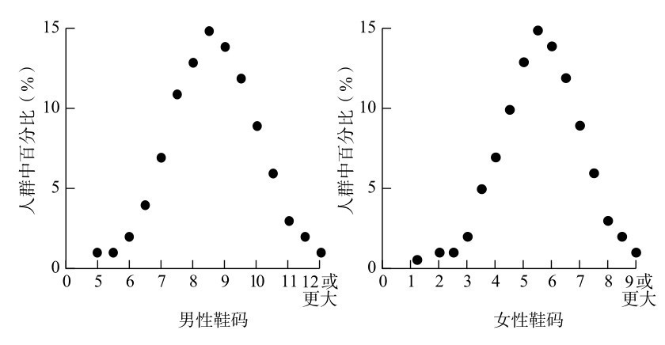
图10-3 英国人鞋码
凯特莱于1874年去世。在他去世的10年后，在英吉利海峡的另一侧，经常可以看到一个60岁的秃顶男人，留着维多利亚式的精致胡须，一边紧盯着英国的街道上的女性，一边在口袋里四处翻找。他就是著名科学家弗朗西斯·高尔顿（Francis Galton）。他正在做实地调查，想测量女性的吸引力。为了小心地记录他对路过的女性的看法，他会在口袋里的一张十字形的纸上扎一针，表明她“有魅力”、“一般”还是“令人厌恶”。完成调查后，他根据女性的容貌绘制了一张全国地图。其中排名最高的城市是伦敦，最低的是亚伯丁。
高尔顿可能是19世纪欧洲唯一一个比凯特莱更痴迷于收集数据的人。在年轻的时候，高尔顿每天在泡茶时会测量茶壶里的温度，同时记录开水的用量和味道。这么做是为了确定如何制作一杯完美的茶（不过他还没有得出结论）。事实上，他终其一生都对下午茶的数学研究很感兴趣。在他晚年时，他把图10-4寄给了《自然》杂志，图中显示了他建议的切下午茶蛋糕的最佳方法，以使蛋糕尽可能地保持新鲜。
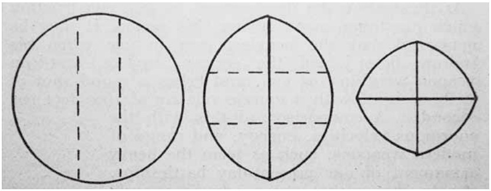
图10-4 在《根据科学原理切圆形蛋糕》中，高尔顿将即将要切的切痕标为虚线，将已经被切过的地方标为实线。这种方法最大限度地降低了蛋糕内部暴露在空气中的面积，避免让蛋糕变干，如果用传统（用他的话说是“非常错误”）的方法切一片蛋糕，就会发生这种情况。在第二步和第三步中，蛋糕要用松紧带固定在一起
既然这本书是关于数字的，那么在这个节骨眼儿上，如果我不提高尔顿的“数字形式”就太不合适了，虽然它们和这一章节的主题并没有太多联系。高尔顿感兴趣的是，相当一部分人（据他估计为5%）会无意识地把数字想象成心理地图。他创造了“数字形式”这一术语来描述这些地图（见图10-5），他写道，这些地图有一个“精确定义且固定不变的位置”，这样一来，人们就必须“在他们的心理视野中参照数字特定的位置”来思考一个数。关于数字形式特别有趣的一点是，数字形式通常表现出非常特殊的模式。它们并非是一条通常认为的直线，而是包含相当特殊的弯曲。
数字形式带有些许维多利亚时代的异想天开的感觉，也许是受压抑的情绪或者过度沉溺鸦片的影响。但在一个世纪后，学术界开始研究这一现象，把它当成一种通感。这是一种神经学现象，当一条认知通路无意中刺激了另一条认知通路的时候，就会发生这种现象。在这种情况下，数字在空间中被赋予了一个位置。其他类型的通感包括认为字母有颜色，或者星期几带有个性。事实上，高尔顿低估了数字形式在人群中的存在比例。现在认为，12%的人在某种程度上都经历过这种现象。
但高尔顿的主要爱好是测量。他建立了一个“人体测量实验室”，这个位于伦敦的开放式中心，可以让公众测量身高、体重、握力、打击速度、视力和其他身体特征。这个实验室收集了超过一万人的详细资料，高尔顿因此声名鹊起，甚至首相威廉·格拉德斯通（William Gladstone）有一天也突然出现在这里，测量了头部。（“他的头虽然低，但形状优美。”高尔顿说。）事实上，高尔顿对测量的爱好已经到了强迫症般的程度，即使他没有什么东西可测量，他也会找到一些东西来满足自己的欲望。1885年，他在《自然》杂志发表的一篇文章中写道，他在参加一场无聊的会议时，已经开始测量同事们烦躁的频率。他建议，从今以后，科学家应该利用这些无聊的会议，这样“他们就可以获得一种新的技能，用数字来表达（一位）听众表现出的无聊程度”。
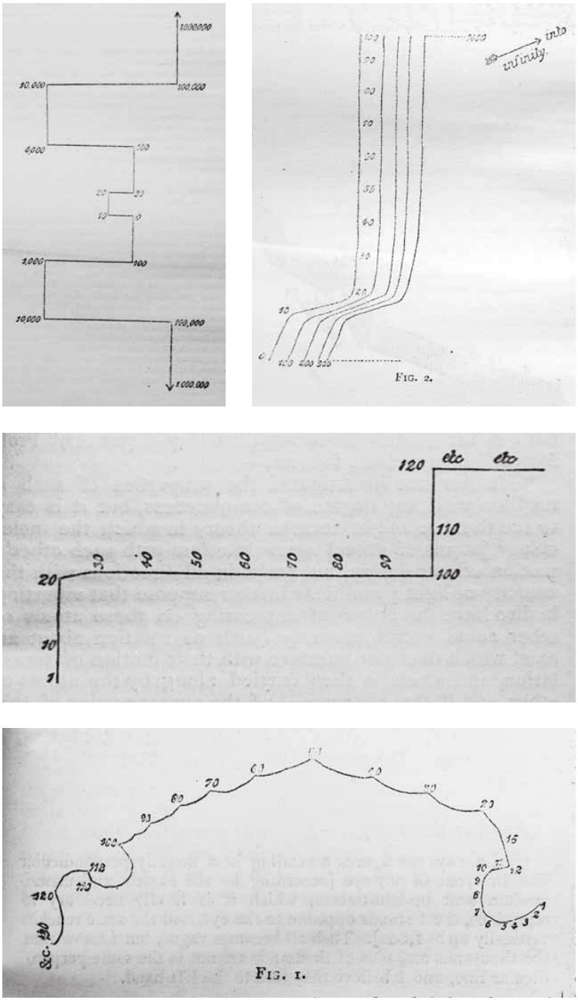
图10-5 高尔顿提出的数字形式的4个例子：古怪的数字空间表达
高尔顿的研究证实了凯特莱的观点，它表明人群的差异是确定存在的。他同样看到钟形曲线随处可见。事实上，钟形曲线出现的频率之高，让高尔顿首先使用了“正态”（normal，字面意思是“正常”）一词来恰当地描述这种分布。人类头部的周长和大脑的大小都呈现出钟形曲线的分布，但高尔顿对智力等非物理属性尤为感兴趣。当时，IQ（智商）测试还没有被发明出来，所以高尔顿寻找了其他测量智力的方式。他找到的标准是位于桑德赫斯特的皇家陆军军官学校的入学考试成绩，他发现考试成绩也符合钟形曲线，这使他很惊讶。“我所知的最具想象力的东西，莫过于钟形曲线所传达的宇宙秩序的奇妙形式。”他写道，“如果古希腊人知道这种规律，他们一定会把它人格化，奉为神明。它平静地统治着最狂野的混乱，丝毫不出风头。人群越大，看起来越混乱，它的影响就越完美。它是非理性的最高级规律。”
高尔顿发明了一种简单而精妙的机器，可以解释他珍视的曲线背后的数学原理，他称之为“五点形”。这个词的原意是色子上5个点的图案
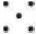
。这个奇妙的装置是一种弹球机，其中每一横行的针相对上面一行都偏离了半个位置。你可以把一个球从上面扔进五点形机器中，球会在针之间弹跳，直到掉到底部的一列柱中。在许多球自然落下后，它们落入柱中形成的形状就像一条钟形曲线。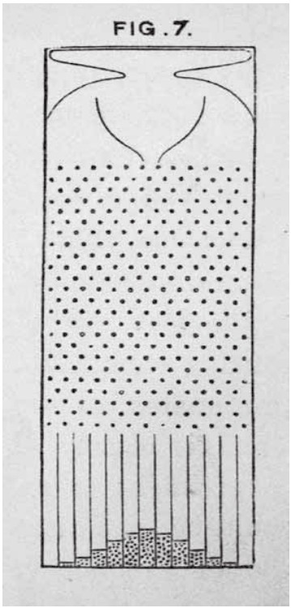
图10-6 “五点形”机器
我们可以用概率理解发生了什么。首先，想象一台只有一根针的五点形机器，假设当一颗球碰到针时，结果是随机的，它向左弹开的概率是50%，向右弹开的概率也是50%。换句话说，它有1/2的概率落入左边（L），也有1/2的概率落入右边（R）。
现在，让我们加一行针。球可能落向左边，然后继续向左，我称之为LL，也可能会出现LR、RL或者RR。因为先向左然后向右移动，相当于留在同样的位置上，L和R会互相抵消（先R后L也是如此），所以现在有1/4的概率球会落在左边的一处，有2/4的概率会落在中间，还有1/4的概率会落向右边。
对第三行针再次重复这个过程，球落下的过程包括LLL、LLR、LRL、LRR、RRR、RRL、RLR和RLL，它们的可能性都相同。也就是说，有1/8的概率球会落在最左侧，有3/8的概率球会落在中间偏左，有3/8的概率球会落在中间偏右，还有1/8的概率球会落在最右侧。
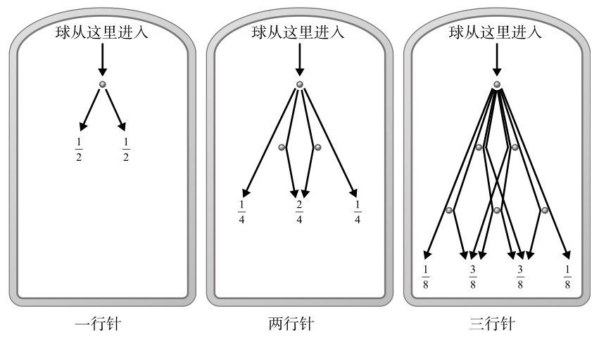
图10-7 有一行、两行、三行针的五点形机器落入球的情况
换句话说，如果在五点形机器中有两行针，我们向机器中投入大量球，根据大数定律，球在底部的排列会遵循约1：2：1的比例。
如果有三行，比例大约是1：3：3：1。
如果有四行，比例将是1：4：6：4：1。
如果我继续计算这些概率，在一个包含10行针的五点形机器中，球在底部的比例将是1：10：45：120：210：252：210：120：45：10：1。
将这些数字绘制出来，可以得到图10-8中的形状。针的行数越多，形状看起来就越熟悉。图下方还有100行和1000行结果的柱状图。（注意，由于左侧和右侧的值太小，无法看见，因此这里仅仅展示了这两张图的中间部分。）
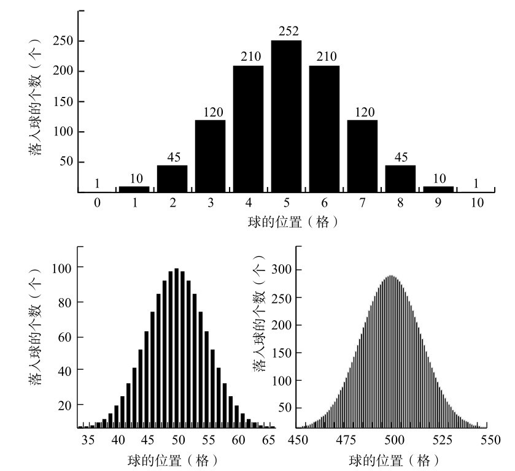
图10-8 包含10行、100行、1000行针的五点形机器落入球的分布
那么这个弹球游戏和现实世界中发生的事情有什么关联呢？假设五点形中的每一行是一个会让测量产生误差的随机变量。它要么让正确的测量值偏高一点点，要么让它偏低一点点。拿伽利略和他的望远镜来说，一行针可以代表仪器的温度，另一行可以表示是否有热空气穿过，再一行可以代表空气中的污染。每一个变量都可能因为某种方式带来误差，就像在五点形中球会向左或向右弹开一样。在任何测量中，都可能存在数百万个难以察觉的随机误差。但是，它们的组合误差让测量的分布呈现出一条钟形曲线。
凯特莱认为，如果一个群体的特征遵循正态分布，换句话说，就是围绕着一个平均值呈钟形曲线分布，而钟形曲线是由随机误差产生的，那么人类特征的差异就可以被看作是一种相对于某个范例的误差。他把这种范例称为l’homme moyen，也就是“平均人”。他说，人群就是由偏离这个原型的各种偏差组成的。在凯特莱的心中，平均值是一件值得追求的事情，因为这是一种让社会得到控制的方式。他写道，偏离平均水平会导致“身体丑陋，以及道德的沦丧”。尽管“平均人”的概念从未得到科学界的认可，但它却渗透到了整个社会中。我们在谈论道德或者品位时，通常会从一个群体可能想到或者感觉到的平均值的角度来看，比如“在普通人眼里”可以接受的东西。
凯特莱推崇平均，但高尔顿却瞧不上这一点。之前提到，高尔顿认为考试成绩是呈正态分布的。大多数人得分在中等水平，很少一些人得分很高，而也有很少一部分人得分很低。
顺带一提，高尔顿本人出身于一个还不赖的家庭。他的嫡表兄是查尔斯·达尔文，两人会定期通信交流他们的科学思想。在达尔文出版《物种起源》阐述了自然选择理论的大约10年后，高尔顿开始建立人类进化的理论。他对智商的遗传能力很感兴趣，想知道怎样提高群体的整体智力。他想把钟形曲线向右移动。高尔顿为此提出了一个新的研究领域，研究所谓的“种族培育”，也就是通过繁殖提高一个群体的智力。他本想把他的新科学称为viticulture（生命栽培），这个词来自拉丁语的vita，也就是生命的意思，但他最终决定使用eugenics（优生学）这个词，希腊语中的eu是“优”的意思，而genos是出生的意思。（Viticulture一词的常用意义是葡萄栽培，这个词来源于vitis，也就是拉丁语中的“葡萄藤”，两个含义大约可以追溯到同一时期。）尽管在19世纪末和20世纪初，许多自由主义的知识分子认为应该将优生学作为一种改善社会的方式，但“繁育”更聪明的人类的愿望很快就被扭曲，名声败坏。在20世纪30年代，优生学成了为创造优越的雅利安种族而采取的残忍纳粹政策的代名词。
回顾过去，很容易看出给人的遗传特征（比如智力或种族纯洁性）排名会导致歧视。由于钟形曲线是在测量人类特征时出现的，因此这条曲线就成了试图证明某些人本质上比其他人更好的同义词。其中最著名的例子是理查德·J. 赫恩斯坦（Richard J. Herrnstein）和查尔斯·默里（Charles Murray）于1994年出版的《钟形曲线》一书，这是近年来最有争议的图书之一。这本书的书名指的是智商分数的分布呈钟形曲线，书中认为，不同种族群体的智商差异是生物学差异的证据。高尔顿写道，钟形曲线“平静”地统治着一切。但是，它的遗产却并非如此。
另一种展示五点形创造的数字的方法是把它们像金字塔一样排列。用这种形式表示的结果被称为帕斯卡三角。
帕斯卡三角的构建方法比计算维多利亚时代的弹珠机器中随机落下的球的分布要简单得多。从第一行的1开始，在它下面放两个1，这样就形成了一个三角形。接着，始终将1放在每一行的开头和结尾处，其他每个位置的值则是上面两个数字的和。
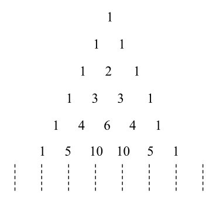
图10-9 帕斯卡三角
虽然这种三角形以布莱兹·帕斯卡的名字命名，但他并不是第一个被它的魅力折服的人。印度、中国和波斯的数学家在他之前的几个世纪就发现了这种模式。不过，与更早的那些爱好者不同的是，帕斯卡写了一本叫作《三角形算术》的书。他被自己发现的丰富的数学模式深深吸引。“它包含这么多性质，这真是一件奇怪的事情。”他写道。他还补充说，在他的书中，他不得不省略掉很多东西，甚至比能涵盖的东西还要多。
我最喜欢的帕斯卡三角形的特点是这样的。把每个数字都放在一个正方形中，并把所有奇数的方块涂成黑色，让所有偶数方块保持白色，结果就得到了图10-10中的马赛克。
你可能已经注意到了，这种模式看起来很熟悉。对，这让人想起了谢尔宾斯基地毯，也就是111页的数学装饰图案，其中一个正方形被分成了9个子正方形，中间的一格被去掉，同样的过程在每个子方格上无限重复下去。如果将谢尔宾斯基地毯转变成三角形，就得到了谢尔宾斯基三角形，其中一个等边三角形被分成4个相同的等边三角形，中间的三角形则被去掉。对剩下的三个三角形进行同样的操作，把它们分成4个三角形，再去掉中间的那一个，以此类推。前三次迭代后的结果见图10-11。
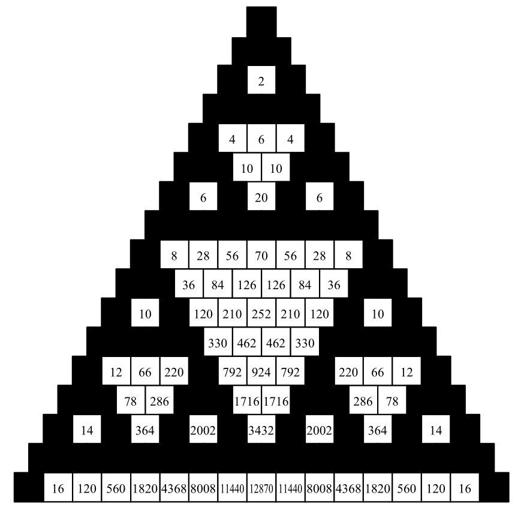
图10-10 帕斯卡三角，其中能被2整除的正方形是白色的
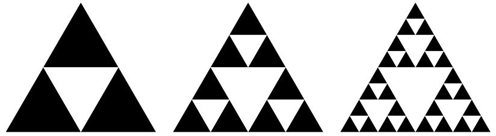
图10-11 谢尔宾斯基三角形
如果我们把帕斯卡三角形的涂色方法扩展到无限行，那么图案看起来就会越来越像谢尔宾斯基三角形。事实上，当极限接近无穷大时，帕斯卡三角形就变成了谢尔宾斯基三角形。
在这些黑白相间的瓷砖中，我们找到的老朋友并不只有谢尔宾斯基。想一想图10-10中帕斯卡三角形中心的白色三角形的大小。第一个白色三角形由一个正方形组成，第二个由6个正方形组成，第三个由28个正方形组成，下两个由120个和496个组成。这些数字让你想到了什么吗？6、28和496，这三个是第304页提到的完全数。一个看似无关的抽象概念竟然呈现出如此惊人的视觉效果。
让我们继续用数字画出帕斯卡三角形。首先，让所有能被3整除的数对应的正方形保留白色，其他数字变成黑色。然后用可被4整除的数字重复这个过程，再用可被5整除的数字重复这一过程。结果如图10-12所示，得到的所有白色图案都是对称的三角形，且都指向与整体相反的方向。
19世纪，人们还在帕斯卡三角形中发现了另一张熟悉的面孔，那就是斐波那契数列。也许这是无法避免的，因为构造三角形的方法是递归的，我们反复执行相同的规则，将一行的两个数相加，得到下一行的一个数，而两个数的递归求和正符合斐波那契数列的规律。两个连续的斐波那契数之和就是数列中的下一个数。
斐波那契数嵌在三角形中，是每条“平缓”对角线上各数的和。平缓对角线是从任意数字到其左下方再左侧的数字的直线，或者是从任意数字到其右上方再右侧的数字的直线。第一条和第二条平缓对角线上只有数字1。第三条包括1和1，加起来等于2。第4条线上的数字是1和2，加起来是3。第5条平缓对角线上的数字是1+3+1=5。第6条是1+4+3=8。到目前为止，我们已经得到了1、1、2、3、5、8，接下来的数字仍是按顺序排列的斐波那契数。
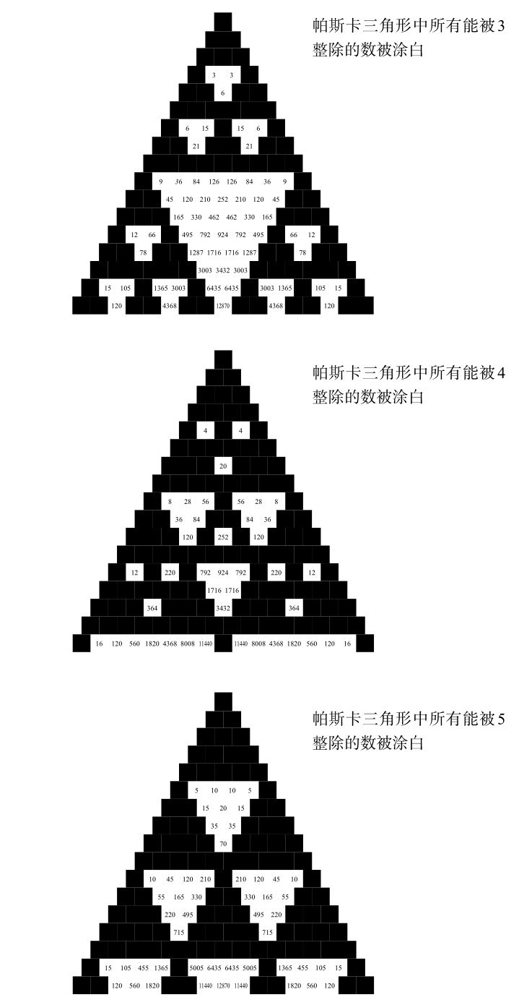
图10-12 将帕斯卡三角形中能被3、4、5整除的数涂白后得到的图形
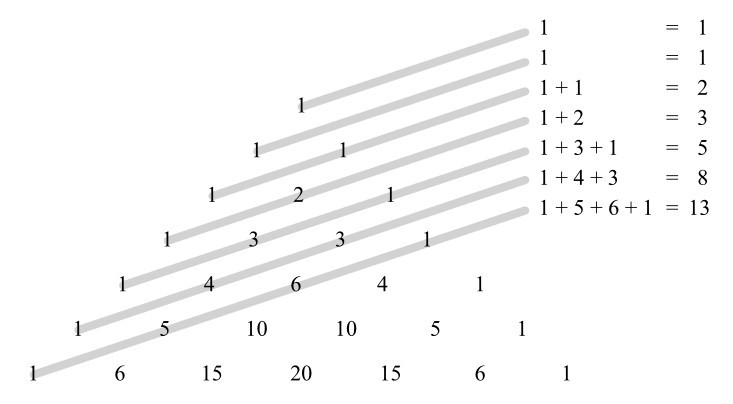
图10-13 帕斯卡三角形中的平缓对角线揭示出了斐波那契数列
古印度人对帕斯卡三角形的兴趣与物体的组合有关。例如，假设我们有三个水果，分别是一个芒果、一颗荔枝和一根香蕉。选择三样水果只有一种组合方法，那就是芒果、荔枝和香蕉。如果我们只要两种水果，我们可以有三种不同方法，也就是芒果和荔枝、芒果和香蕉，还有荔枝和香蕉。选择一个水果的方法也有三种，就是分别拿一个。如果最后选择零个水果，这只能通过一种方式实现。换句话说，三种不同水果的组合数产生了1、3、3、1这串数字，这是帕斯卡三角形的第三行。
如果我们有4样物体，那么一次不拿、单独拿、一次拿两样、一次拿三样和一次拿四样的组合数分别是1、4、6、4、1，也就是帕斯卡三角形的第4行。我们可以拿越来越多的物体继续这个过程，这样就会看到帕斯卡三角形实际上是个组合数目的参考表。如果我们有n样物品，想知道从中拿m样会有多少种组合，答案就是帕斯卡三角形第n行的第m个位置。（注意：按照惯例，任何一行中最左边的1是该行的第0位。）例如，从7个水果中选择3个水果，有多少种分组方式？答案是35种，因为第7行第3个数字是35。
现在我们来把数学对象组合起来。想想x+y，什么是（x+y）2 ？它就是（x+y）×（x+y）。为了展开它，我们需要将第一个括号中的每一项乘以第二个括号中的每一项。所以，我们会得到xx+xy+yx+yy，也就是x2 +2xy+y2 。到这里，你发现什么了吗？如果继续算下去，我们可以更清楚地找到规律。各个项的系数就是帕斯卡三角形中每行的数。
（x+y）2 =x2 +2xy+y2
（x+y）3 =x3 +3x2 y+3xy2 +y3
（x+y）4 =x4 +4x3 y+6x2 y2 +4xy3 +y4
数学家亚伯拉罕·棣莫弗（Abraham de Moivre）是18世纪初居住在伦敦的法国胡格诺教派的难民，他第一个发现，随着（x+y）自乘的次数增加，这些等式中的系数会近似于一条曲线。他没有称之为钟形曲线或误差曲线，也没有称之为正态分布或者高斯分布，这些都是后来才有的名称。这条曲线在数学文献中的首次出现，是在棣莫弗于1718年出版的一本关于博弈的书中，名叫《机会论》。这是概率论的第一本教科书，也是展现了科学知识如何因赌博而蓬勃发展的另一个例子。
我一直把钟形曲线当作一条曲线，实际上，它是一组曲线。所有曲线看起来都像一个钟，但有些曲线比其他更宽一些（见图10-14）。
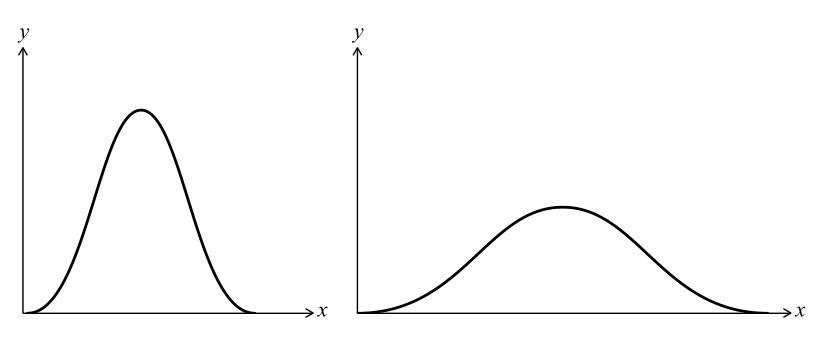
图10-14 不同偏差的钟形曲线
这里解释一下为什么我们会得到不同的宽度。举个例子，如果伽利略用21世纪的望远镜测量行星轨道，误差的幅度将小于他使用16世纪的望远镜的观测结果。现代仪器产生的钟形曲线比古董仪器产生的要更窄。虽然它们仍会呈正态分布，但误差要小得多。
钟形曲线的平均值被称为均值，宽度被称为偏差。知道了均值和偏差，我们就知道了曲线的形状。只用两个参数就能描述正态曲线，这十分方便。不过，过于方便也会带来一些问题。通常统计学家会过分渴望在他们的数据中找到钟形曲线。经济学家比尔·鲁滨逊（Bill Robinson）是毕马威会计师事务所法务会计部门负责人，他承认情况确实如此。“我们喜欢和正态分布打交道，因为正态分布的数学性质已经得到了深入的研究。一旦我们知道这是正态分布，我们就可以开始做出各种有趣的陈述。”
简单来说，鲁滨逊的工作是通过在巨大的数据集中寻找规律，来推断是否有人在做假账。他的策略与庞加莱每天称面包时使用的策略相同，不同的是，鲁滨逊研究的是千兆字节的金融数据，并掌握着更复杂的统计工具。
鲁滨逊说，他的部门会假设任何一组数据的默认分布都是正态分布。“我们喜欢假设正态曲线可以描述手头的数据，因为这样我们就仿佛置身于阳光下，一切一目了然。但事实上，有时候正态曲线并不起作用，有时我们或许应该在黑暗中寻找。我认为，在金融市场中，我们确实在很多情况下错误假设了正态分布，但它可能行不通。”事实上，近年来，学术界和金融界都对历史上依赖正态分布的做法表示强烈抵制。
当一个分布比钟形曲线更分散，离平均值更远，它就被称为扁峰（platykurtic）分布，这个词来自希腊语platus（意思是“平坦”），以及kurtos（代表“隆起的”）。相反，当一个分布更集中在平均值附近时，它被称为尖峰（leptokurtic）分布，它来自希腊语leptos，意思是“瘦”。统计学家威廉·西利·戈塞特（William Sealy Gosset）在都柏林吉尼斯啤酒厂工作。1908年，他在备忘录中绘制了图10-15，为了记住哪个词是哪个：长着鸭子一样嘴巴的鸭嘴兽就叫作扁峰分布，而接吻的袋鼠就叫作尖峰分布。他选择袋鼠是因为它们“以‘跳跃’闻名 [1] ，不过，按照同样的理由，本可以选择野兔的！”。戈塞特的草图开创了用“尾”来描述分布曲线最左边和最右边部分的先河。
经济学家所说的肥尾或重尾分布，指的就是曲线在极端处的高度比正态分布要高，就好像戈塞特画的动物的尾巴大于平均水平。在这些曲线描述的分布中，相比于正态分布，极端事件更有可能发生。例如，如果一只股票的价格变化是重尾的，那就意味着价格大幅下跌或上涨的可能性要比正态分布时大得多。因此，有时假设数据分布呈钟形曲线而非重尾曲线可能是鲁莽的。经济学家纳西姆·尼古拉斯·塔勒布（Nassim Nicholas Taleb）在他的畅销书《黑天鹅》中认为，我们往往低估了分布曲线中尾部的大小和重要性。
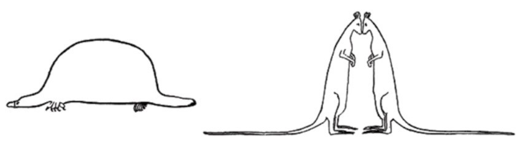
图10-15 扁峰和尖峰分布
他认为，钟形曲线是一个有历史缺陷的模型，因为它无法预见非常罕见的极端事件的发生，也无法预测它们的影响，比如像互联网这样的重大科学发现，或者像“9·11”这样的恐怖袭击事件。“（正态分布）的普遍存在并不是世界的属性。”他写道，“它存在于我们的头脑中，源于我们看待数据的方式。”
最希望在数据中看见钟形曲线的或许是教育界。在期末考试中，老师会根据学生的分数落在一条钟形曲线上的情况来决定从A到E的成绩，成绩的分布预计近似于钟形曲线。曲线被分为几个部分，A表示最高的部分，B是下一个部分，以此类推。为了教育系统的顺利运行，保证每年获得A到E的学生的比例相当，是很重要的。如果在某一年里有太多A或者太多E，就会对资源造成压力，使得选某些课程的人数不够或是太多。考试是经过特别设计的，设计者希望结果的分布尽可能地与钟形曲线重合，不管它是否准确反映了真实的智力。（整体上来说可能是这样的，但并非所有情况下都是如此。）
甚至有人认为，一些科学家对钟形曲线的推崇会助长草率的做法。我们从五点形中看到随机误差是呈正态分布的。因此，测量中的随机误差越多，就越有可能从数据中得到一条钟形曲线，即使被测量的现象并不是正态分布的。一组数据呈正态分布，可能仅仅是因为测量数据收集得太混乱。
这让我想到了我的法式长棍。它们的重量真的呈正态分布吗？尾巴是瘦还是胖？首先回顾一下这个过程，我称了100根法式长棍，它们的重量分布见图10-1。这张图显示了一些较好的趋势：它们的均值在400克左右，重量在380克和420克之间大致呈对称分布。如果我像亨利·庞加莱一样不知疲倦地测量，我会将这项实验持续一年，得到365个（忽略面包店关门的日子）重量数据来比较。如果有更多的数据，分布就会更清晰。尽管如此，我不大的样本也足以让我得到了一些规律。我用一种技巧重新绘制图表来压缩我的结果，该比例将法式长棍的重量以8克为单位分组，而非1克。如图10-16所示。
在我画出这张图的那一刻，我松了一口气，因为我的法式长棍实验似乎产生了一条钟形曲线。我得到的事实似乎与理论相符，这是应用科学的胜利！但仔细观察后，我发现曲线图并不像钟形曲线。重量确实聚集在一个均值附近，但曲线显然不是对称的，它的左侧不如右侧那么陡，就好像有一块看不见的磁铁，把曲线向左拉了一点儿。
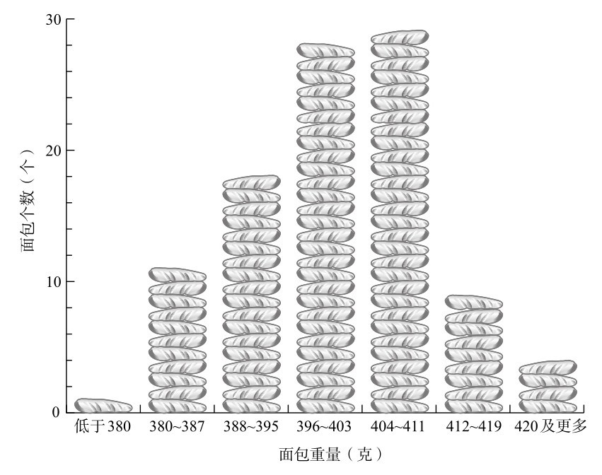
图10-16 以8克为单位分组后得到的面包重量分布
因此，我可以得出下面两个结论中的一个：要么格雷格斯的法式长棍的重量不是呈正态分布的，要么它们是正态分布的，但是我的实验过程中出现了一些偏差。我想到了一个可能的偏差。我把没吃过的面包都放在厨房里，因此我决定称一个几天前买的面包。令我惊讶的是，它只有321克，远远低于我测量的最小重量。我突然意识到，同一条法式长棍的重量并不是固定不变的，因为面包变干后会变得更轻。我又买了一根面包，发现一根法式长棍早上8点比中午重了约15克。
现在可以明显看到，我的实验是有缺陷的。我测量时没有考虑到一天中的时间。几乎可以肯定的是，这种变化为重量的分布带来了偏差。大多数时候我是店里的第一位客人，买回面包之后，在早上8点10分左右称重，但有时我起晚了。这个随机变量并不是正态分布的，因为平均值应该在早上8点到9点之间，但不存在早上8点之前的尾部，因为那会儿商店还没开门。另一侧的尾部则一直延伸到午饭时间。
后来，我又想起了其他因素。环境温度是什么样的？我是在初春开始这个实验的。实验在初夏结束，那时天气明显更热。我看了看数字，发现总体上而言，我的长棍面包的重量在项目接近尾声时变轻了。我猜想，夏季的炎热会使面包更快变干。同样，这种差异可能会产生向左拉伸曲线的效果。
我的实验可能表明，法式长棍的重量近似于一个稍微变形的钟形曲线，但我真正认识到的一点是，测量从来就不那么简单。正态分布是一种理论上的理想情况，不能假设所有结果都符合它。我好奇亨利·庞加莱的实验：他在测量面包时，是否消除了巴黎天气或者测量时间带来的偏差？也许他的结果根本没有证明他买到的是950克的面包，而不是1千克的面包，只是证明了从烘焙到测量，一个1千克的面包会减轻50克。
事实上，钟形曲线的历史就好像一个神奇的寓言故事，它展现了纯科学家和应用科学家之间奇怪的关联。庞加莱曾经收到法国物理学家加布里埃尔·李普曼（Gabriel Lippmann）的一封信，李普曼精辟地总结了正态分布受到如此广泛推崇的原因：“每个人都相信（钟形曲线）：实验者相信钟形曲线是因为他们认为钟形曲线可以用数学证明，而数学家相信钟形曲线则是因为他们觉得它是通过观察而建立起来的。”在科学中，就像在其他许多领域一样，我们经常选择相信我们想相信的。
弗朗西斯·高尔顿用了一种只有拥有巨额财富的人才能做到的方法进行科学探索。他刚成年不久，就带领探险队前往非洲的偏远地区，这给他带来了巨大的声望。他熟练掌握科学仪器，曾经有一次，他站在远处，就用他的六分仪测量了一位特别丰满的霍屯督人 [2] 的身材。这起事件似乎表明他希望和女性保持一定距离。后来，一位部落首领向他介绍了一位浑身都是黄油和代赭石的年轻女子，可以与他做爱，但高尔顿拒绝了，他担心她会弄脏自己的白色亚麻西装。
优生学是高尔顿最臭名昭著的科学遗产，但并不是他最经久不衰的创新。他是第一个使用问卷进行心理学测试的人。他为指纹设计了一个分类系统，被沿用至今，这使得指纹成为警方调查的工具。他想出了一种图解天气的方法，1875年《泰晤士报》刊登了第一张公开发表的天气图。
同年，高尔顿决定招募一些朋友进行一项香豌豆实验。他把种子分给7个人，要求他们播种，并把长出的后代还回来。高尔顿测量了这些后代的种子，并将它们的直径与亲代的直径进行了比较。他注意到了一个乍看似乎与直觉背道而驰的现象，那就是，大种子倾向于产生较小的后代，而小种子倾向于产生较大的后代。10年后，他分析了从人体测量实验室得到的数据，发现了人类身高具有相同的模式。在测量了205对父母和他们的928位成年子女后，他发现特别高的父母的孩子普遍比他们矮，而特别矮的父母的孩子通常比父母要高。
稍微一想，我们就可以理解为什么一定会是这样的。如果高个子的父母总能生出更高的孩子，而矮个子的父母总会生出更矮的孩子，那么我们的世界现在就会变成只由巨人和侏儒组成。但这种情况并没有发生。由于营养和公共健康情况的改善，人类总体上可能会变得更高，但人口中的身高分布仍然受到控制。
高尔顿把这种现象称为“遗传身高向平庸的回归”。这个概念现在更普遍地被称为“向均数回归”。在数学背景下，向均数回归说的是，一个极端事件之后很可能会出现一个不那么极端的事件。例如，如果我测量了一根格雷格斯的法式长棍，结果为380克，这是一个非常低的重量，很可能下一根面包的重量将超过380克。同样，在发现了一根420克的长棍后，很可能下一根面包的重量将低于420克。五点形从视觉上向我们展示了一种回归机制。如果一颗球被放在最上面，然后落在最靠左边的位置，那么下一颗掉下来的球可能会落在更靠近中间的地方，因为大多数球都会落在中间位置。
但人类身高的代际变化遵循着的模式不同于一周中法式长棍重量的变化，或者小球在五点形机器中落下地点的变化。我们凭经验知道，身材超过平均值的父母，往往会生出身材超过平均值的孩子。我们也知道，班上最矮的孩子很可能来自父母身材也相对矮小的家庭。换句话说，孩子的身高与父母的身高之间的关系并不是完全随机的。另一方面，星期二买到的法式长棍的重量与星期一买到的法式长棍的重量之间的关系则是随机的，一个球在五点形中的位置相对于其他任何球来说是随机的（至少在实际情况中如此）。
为了了解父母身高和孩子身高之间的关联强度，高尔顿有了另一个想法。他画了一张图表，其中一个轴是父母的身高，另一个轴是孩子的身高，然后根据点的分布，他画了一条拟合度最高的直线。（每一组父母的身高都以父亲和母亲身高的平均值来表示，他称之为“中间父母”。）这条直线的斜率是2/3。换句话说，中间父母的身高比平均身高每高出1英寸，孩子只会比平均身高高出2/3英寸。中间父母比平均身高每矮1英寸，孩子只会比平均身高矮2/3英寸。高尔顿把这条线的斜率称为相关系数。相关系数决定了两组变量之间的关联程度。高尔顿的信徒卡尔·皮尔逊将相关性这一概念发展得更加完善，皮尔逊于1911年在伦敦大学学院建立了世界上第一个统计系。
回归和相关是科学思想上的巨大突破。对艾萨克·牛顿和他那一代人来说，宇宙服从确定性的因果定律，一切的发生都是有原因的。然而，不是所有科学都能被如此简化。例如，在生物学中，某些结果可能是多种因素以复杂的方式造成的，比如肺癌的发生。相关性为分析关联的数据集之间的模糊关系提供了一种方法。例如，不是所有吸烟的人都会患上肺癌，但是通过观察吸烟和肺癌的发病率，数学家就可以知道，如果你吸烟，患癌症的概率有多少。同样，并不是所有来自大班的孩子都会比来自小班的孩子表现差，但班级规模确实会影响考试成绩。统计分析在医学、社会学、心理学、经济学等多门学科中开辟了一个全新的研究领域。它让我们能够在不知道确切原因的情况下利用信息。高尔顿的原创性见解使统计学成了一个备受推崇的领域：“一些人讨厌统计学这个名字，但我发现它们充满了美和有趣的事情。”高尔顿写道，“只要它们不是被简单粗暴地使用，而是通过更好的方法巧妙地处理，并且被谨慎地解读，它们处理复杂现象的能力将是惊人的。”
2002年诺贝尔经济学奖没有颁发给经济学家。心理学家丹尼尔·卡尼曼（Daniel Kahneman）获得了这个奖项。他的职业生涯［大部分时间是和同事阿莫斯·特韦尔斯基（Amos Tversky）合作］主要研究决策背后的认知因素。卡尼曼说，对向均数回归的理解给他带来了最令人满足的“灵光乍现”。那是在20世纪60年代中期，卡尼曼正在给以色列空军飞行教员讲课。他告诉他们，想让军校学员的学习效果更好，表扬比惩罚更有效。演讲快结束的时候，一位有丰富经验的教员站起来告诉卡尼曼，他认为卡尼曼错了。这位男士说：“有很多次，我表扬了一些飞行学员在特技飞行演习中的表现，但一般来说，在表扬之后，他们的表现会变得更差。另一方面，我在学员表现不好时经常对他们大喊大叫，一般来说，下一次他们就会做得更好。所以，请不要告诉我们，鼓励有效，而惩罚不行，因为情况恰恰相反。”卡尼曼说，那一刻他恍然大悟。飞行教员认为惩罚比奖励更有效，这是缺乏对向均数回归的理解。如果一位学员在一次飞行中表现得非常糟糕，那么无论教官是训诫还是表扬，他下次都很有可能会做得更好。同样，如果他在一次飞行中表现得非常好，那么他很可能下一次会表现得没那么好。“因为我们倾向于在别人做得好的时候进行奖励，而在做得不好的时候进行惩罚，而且因为向均数回归的存在，所以在统计上，我们奖励他人后他们就会表现得不那么好，而惩罚他人后他们就会表现得更好，这是人类社会的普遍情况。”卡尼曼说。
向均数回归并不是一个复杂的概念。它所说的仅仅是，如果一个事件的结果至少部分是由随机因素决定的，那么一个极端事件之后很可能会出现一个不那么极端的事件。然而，尽管回归很简单，但大多数人并不理解它。我想说的是，回归实际上是一个不被熟悉但十分有用的数学概念，你需要用它来理性地理解世界。关于科学和统计学有很多简单的误解，都可以归结为没有将向均数回归考虑在内，其数量令人吃惊。
拿超速照相机来举例。如果同一路段发生了多起事故，这可能是一个单独原因导致的，比如一群恶作剧的青少年在路上绑了一根电线。逮捕这些青少年，事故就不会再次出现。但事故多发也可能由许多随机的因素导致，比如恶劣的天气条件、道路形状、当地足球队获胜了，或者当地居民遛狗的决定，等等。事故多发就相当于极端事件。极端事件发生后，极端事件发生的可能性更小了，随机因素组合在一起，从而导致更少的事故发生。超速照相机通常被安装在发生过一次或多次严重事故的地方，它们的目的是让司机开得更慢，减少撞车的频次。确实，安装超速照相机之后，事故量往往会降低，但这可能与超速照相机没有多大关系。由于向均数回归的原理，无论是否安装照相机，在事故连续发生之后，这一地点的事故本身就可能会减少。（这不是要反对超速照相机，因为它们可能确实有效。更确切地说，这是一个有关超速照相机的争论的争论，在有关超速照相机的争论中常常出现对统计数据的误用。）
我最喜欢的向均数回归的例子是“《体育画报》的诅咒”。这是一种奇怪的现象，运动员在登上这本美国顶级体育杂志的封面后，表现会立即明显退步。这种诅咒在第一期就出现了。1954年8月，棒球运动员埃迪·马修斯（Eddie Mathews）在带领球队密尔沃基勇士队取得九连胜后，登上了杂志封面。然而这一期刚刚发行，球队就输了比赛。一周后，马修斯因伤病不得不缺席了7场比赛。这个诅咒最著名的例子发生在1957年，当时在俄克拉何马足球队连胜47场比赛的情况下，杂志上出现了引人注目的标题——“俄克拉何马为什么战无不胜”。但果不其然，在杂志问世后的那个周六，俄克拉何马队以0比7的比分输给了圣母队。
对《体育画报》的诅咒的一种解释是，登上封面给运动员或球队带来了心理压力。运动员或者球队在公众眼中变得更为突出，他们会被当成击败的目标。在一些情况下，成为受欢迎的人带来的压力可能确实会让人表现更差。然而，大多数时候，“《体育画报》的诅咒”仅仅是一个向均数回归的例子。一个刚登上杂志封面的人，通常都处于最佳状态。他们可能经历了一个出色的赛季，或者刚刚赢得了冠军，或者打破了纪录。运动成绩取决于天赋，但也取决于许多随机因素，比如你的对手是否感冒了，你是否被刺激到了，或者阳光有没有晃到你的眼睛。有史以来最好的结果就很像极端事件，而向均数回归的原理表明，在极端事件之后，发生极端事件的可能性比较小。
当然总有例外。有些运动员的能力要比对手强得多，比赛中的随机因素对他们的表现几乎没有影响。他们可能在运气很不好的情况下还是能赢得比赛。但是，我们往往低估了随机性对竞技体育成功的影响。20世纪80年代，统计学家开始分析篮球运动员的得分模式。他们惊讶地发现，某位特定的球员投篮成功与否完全是随机的。当然，一些选手比其他选手要好。假设有球员A，他的投篮命中率平均是50%，也就是说，他得分或失手的概率是一样的。研究人员发现，球员A投中和失手的顺序似乎完全是随机的。换句话说，与其说是投篮，他可能更像在扔硬币。
再考虑球员B，他有60%的概率会得分，而有40%的概率会失手。同样，进球的顺序是随机的，就像球员在掷一枚概率为60对40的硬币，而不是在投篮一样。当一位球员连续命中时，专家会称赞他打得很好，而当他连续失手时，他会受到批评。然而，一次命中或失手对他下一次投篮是否成功是没有影响的。每一次投篮都像掷硬币一样随机。如果球员B在很多比赛中的平均命中率都保持着60对40，这确实值得称赞，但是表扬他连续命中5次，这和称赞一位掷硬币的人连续掷出5次正面其实没有什么不同。在这两种情况下，他们都只是手气很好而已。也有可能，甚至是极有可能，球员A的投篮能力整体不如球员B，但在一场比赛中球员A能够更多地连续投篮成功。这并不意味着他是一位更好的球员。是随机性给了球员A好手气，而B的手气没那么好。
最近，西蒙·库珀（Simon Kuper）和斯特凡·希曼斯基（Stefan Szymanski）研究了英格兰足球队自1980年以来的400场比赛。他们在《为什么英格兰会输球》一书中写道：“英格兰队的胜负顺序……和一系列随机掷硬币的顺序没有区别。英格兰上一场比赛的结果，或者说英格兰最近几场比赛的任何组合对预测下一场比赛的胜负都没有价值。无论在一场比赛中发生了什么，它似乎与下一场比赛的结果都毫无关系。你唯一可以预测的是，从中长期来看，英格兰队将在所有的比赛中取得约一半的胜利。”
体育表现的高低起伏通常可以用随机性来解释。在一次非常明显的上升之后，你可能会接到《体育画报》的电话。而你几乎可以确定，你接下来的表现一定会下滑。
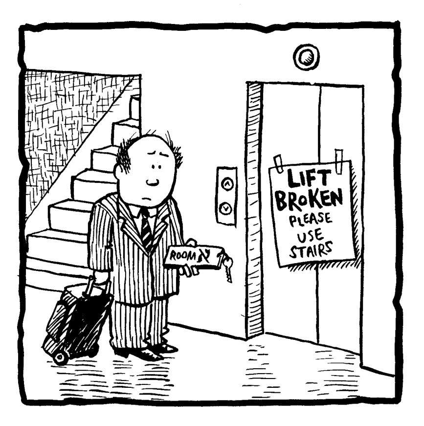
[1] 鸭嘴兽（platypus）和扁峰（platykurtic）拼写相似，而跳跃（lepping）的拼写类似尖峰（leptokurtic）。——译者注
[2] 霍屯督人即科伊科伊人，指非洲南部的一些原住民。霍屯督人这一称呼在今天被认为具有一定贬义。——译者注